A · serial occurrence 1
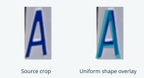
The interrupted font reconstruction work has been recovered and verified. This continuation also fixes a stale-tab save that could overwrite another reviewer's newer decision.
Publication status: prepared locally. Automatic approval review rejected the upload of this exact source-and-research payload to the public repository. Explicit permission is still needed to publish the prepared branch and open its draft follow-up PR. No new PR or deployment is claimed.
Existing baseline: Plateforge PR #17 at 87f1250. Recovered implementation: f34cbab. Current local commit: 93a100a4ede6c73b02e720960114cb17a617f6cf.
work/bc-font-reconstruction-review-20261107, targeting PR #17's branch work/bc-font-evidence-20261102. The current diff contains 167 files relative to that baseline.Unresolved conflict drafts are retained within the tab and warned about on closing. Resolve them before exporting or moving devices. The guard protects stale forms using local browser storage; it does not provide database transactions across simultaneous writers.
## Why this change is needed PR #17 corrected passenger font selection, but most inventory rows still did not expose their actual glyphs for review. Astrographic 1 and 2 could be missed when browsing default groups, three APEC entries had incomplete or stale assignments, and several passenger letterforms still used visibly weak constructions. This is a stacked follow-up to #17, based on `87f1250912301848bb0d86be86bc6769d9f56de3` and targeting `work/bc-font-evidence-20261102`. ## What this changes - Recreate five filled vector masters: ordinary 2025 passenger U/Y/Z and distinct Astrographic 3 / Classic 4 Ns. The scoped implementation preserves existing advances and separates ordinary passenger contexts from shared commercial, sample, motorcycle and other-small recipes. - Add credited source/previous/current overlays, with 54 photographed character occurrences from nine sources. Repeated characters remain separate, shape comparisons preserve relative width, and placement comparisons retain the renderer's positions. - Make all 447 formats and 193 explicit choices reviewable through actual SVG strips and glyph tiles, independent filters, component decisions, evidence/notes, import/export, and stale-geometry fingerprints. - Fix stale-tab autosaves that could replace newer decisions. Conflict drafts stay visible, the saved record is shown for comparison, and explicit replacement rechecks the displayed version. - Correct the APEC grouping assignments, include the previously omitted military maple-leaf format, and publish a bounded next action for every emitted serial-context profile and default group. - Keep original selection fixes and new reconstruction changes in separately frozen comparisons, with reproduction gates and focused browser checks in CI. ## Review Start with `docs/research/bc-font-reconstruction-2026-11-07/README.md` and its `validation.json`. The public review entry is `public/bc-font-reconstruction/index.html`; the one-by-one queue is `public/bc-font-audit/index.html`. The five masters are clean source-informed constructions. The small U/Y/Z photographs do not establish exact contours, and the two Classic Ns come from one specimen. No case is automatically photographically accepted. The coverage ledger keeps remaining glyph, cap-height, spacing, motorcycle and other-small questions explicit. ## Validation The final local validation receipt records the full passing unit/format suite, focused review-state and comparison regressions, TypeScript and the production build, regenerated audit/group outputs, source-overlay reproduction, 19 protected geometry checks and 449 font-face checks. The current browser execution gate remains open: local Chromium fails before page creation because the workspace denies a required socket. The new two-tab regression is authored; actual UI, mobile, SVG/PNG and export checks must run in the configured Chromium, Firefox and WebKit CI jobs after publication. This PR should remain draft until those checks have completed successfully. Saved review protection uses optimistic checks over browser local storage. Unresolved conflict drafts stay in the current tab and must be resolved before closing or exporting them; this is not a transactional multi-user review backend.
| Check | Result | Meaning |
|---|---|---|
| Full unit/format suite | 1,997 passed in 71 files | Includes the shared review-state regressions. |
| Review-state/report regressions | 14 passed | Stale forms, explicit replacement, component/render isolation, import behavior and report packaging. |
| Reconstruction comparison regressions | 7 passed | Enforces the declared outline/provenance scope against the frozen PR #17 baseline. |
| Production build and TypeScript | Passed | Built with the deployed /plateforge/ base path. |
| Generated audit | 653 cases; zero structural, selection or generated-sample errors | 447 defaults, 193 explicit choices and 13 diagnostic focus cases. |
| Grouping and static report assets | 447 formats, 53 default groups; 147 local links resolved across 7 built pages | Includes all three corrected APEC assignments and the cross-category motorcycle contexts. |
| Source/geometry protection | 19 geometry files and 449 font-face checks passed | The existing protected registry/geometry was not replaced to implement the new scoped masters. |
| Source-overlay reproduction | Passed for family, U/Y/Z and N comparisons | Byte-for-byte outputs where documented; decoded-pixel comparison for the family PNG builder. |
| Browser interaction, mobile and export suite | Pending | Chromium exits before creating a page because this workspace denies a required socket. The new two-tab browser regression is written but has not executed here. Chromium, Firefox and WebKit CI await publication. |
The 447 unchanged default signatures cover their sampled glyph/provenance/text/fit fields. They do not certify complete pixel equivalence or photographic accuracy. Dedicated N comparisons cover target letters absent from those default samples.
The visible improvement is at the broad inner diagonal joins. The clean reconstructed masters preserve each family's width and the existing advances while replacing sharp notches with the rounded construction seen in these three occurrences.
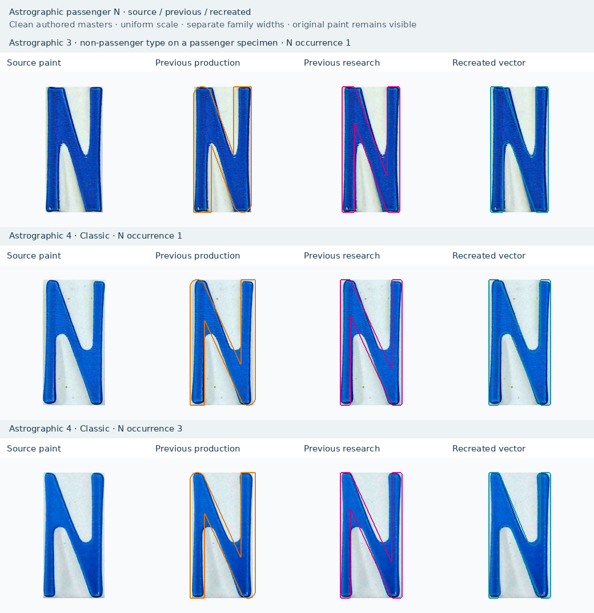
The two Classic Ns are on one plate. They are separate occurrences, not independent specimens. The model captures a repeatable structural feature while the exact historic contour remains qualified by paint, wear and registration uncertainty.
The new filled shapes retain 53-unit advances. The U bowl, Y inner fork and Z joins are recreated from the credited photographs and remain restricted to the ordinary 2025 passenger context.
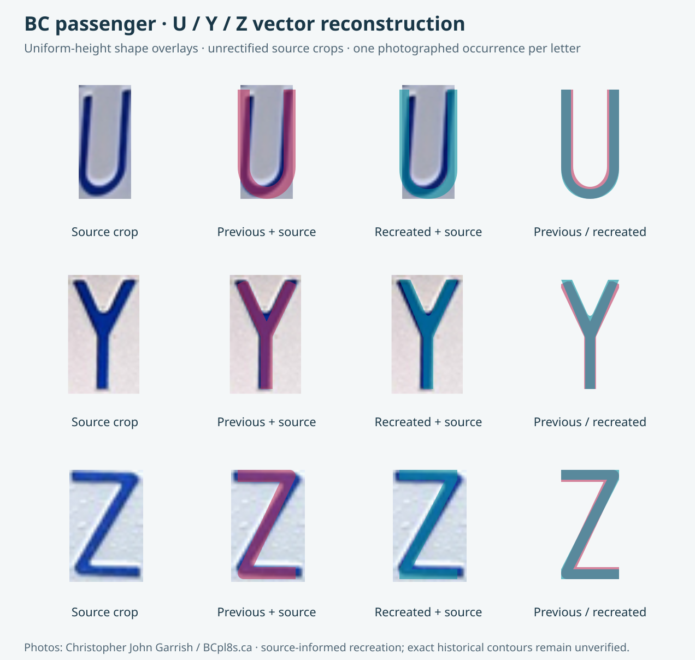
Each changed letter has one small source photograph. These image-plane overlays preserve width and the remaining perspective distortion; matching every photographed pixel would not establish the original tooling.
Original credited photograph · 222 × 123 pixels
The holder obscures physical corners; strong perspective remains. Only image-plane shape comparisons are provided.

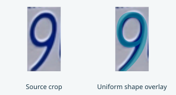
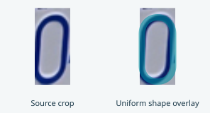
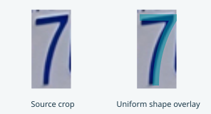
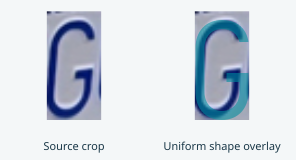
Original SHA-256: f3c5691b65b91dde0ffe464e9cd6b3e95f969567c6e4725a468a8fa5aa77221c
Original credited photograph · 261 × 123 pixels
Manual intersections of the visible shell edges, with approximately 2 px uncertainty; rounded corners and low resolution limit placement precision. The entire rendered serial receives one plate-plane transform. No per-glyph placement fitting.
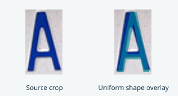
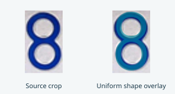
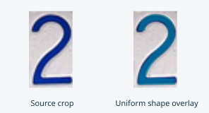
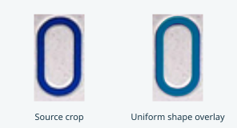
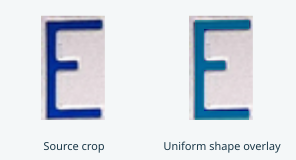
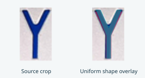
Original SHA-256: af54da06e8daee0ee4a1d56001596201f24bd47c30dbb067b72817abe3bc37ab
Original credited photograph · 250 × 123 pixels
The upper holder covers the physical corners. The image is vertically foreshortened; uniform image-plane overlays retain that unresolved distortion.
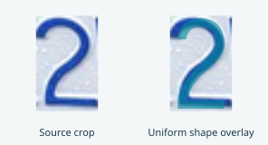
Original SHA-256: ee1ba102f918972f9915136d7aa01aa45bff74f77f06061b9c6c013435bc8e1a
Expand each family to inspect every photographed occurrence, then compare full serial placement. Glyph panels use uniform cap-height alignment and retain relative width. Placement panels retain the actual renderer's positions under one plate-plane transform. No character is independently stretched or repositioned to hide a mismatch.
Recorded decision: Compared six occurrences; retained the existing masters with residuals recorded. No complete-alphabet approval.
Shape: The research A follows the photographed outer width more closely than production; its upper counter remains more pointed than both photographed counters. L and 0 follow the main paint body. The 6 terminal and 7 bend still warrant an independent specimen.
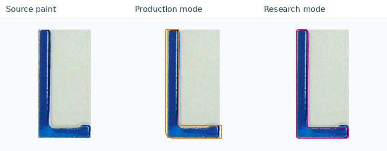
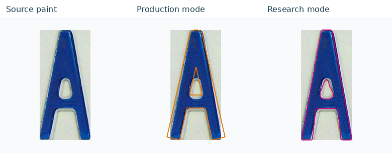
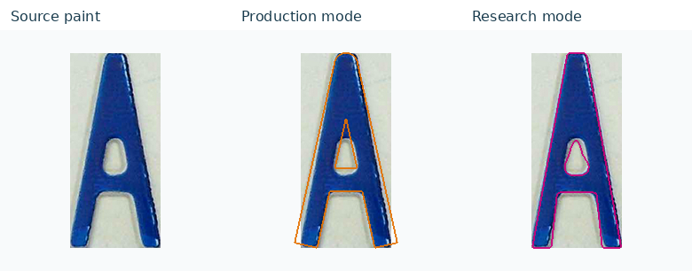
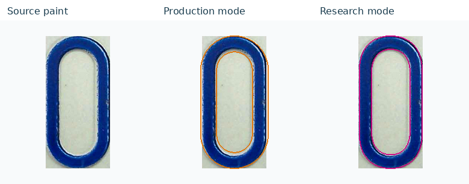
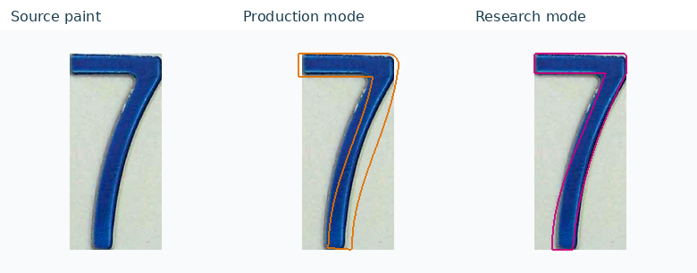
The rendered left block begins farther right than this specimen and the numeral block is compressed inward. Height-normalized shape agreement therefore does not establish correct serial placement.
Reference crop
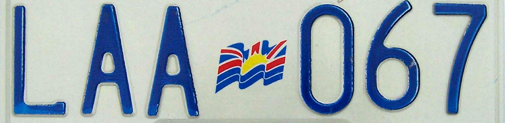
Current research geometry in magenta over the reference
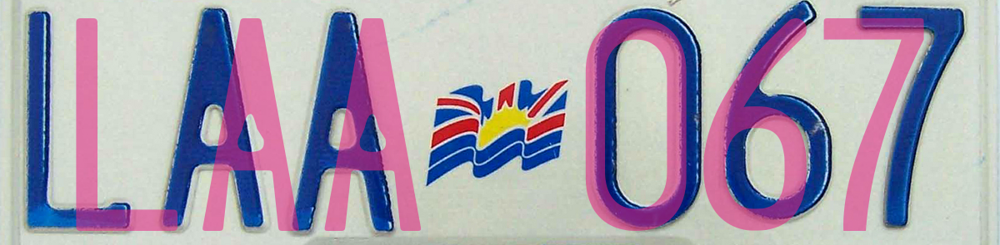
Current production geometry in magenta over the reference
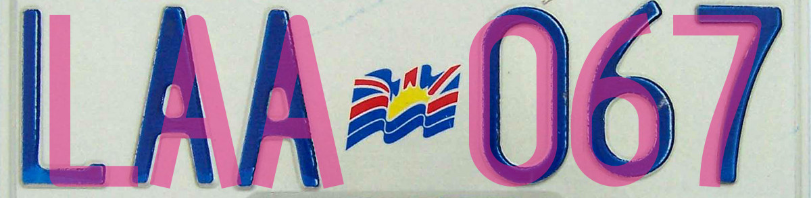
Next: Check the A counter on an independent source and measure fixed-pitch left/right blocks across additional type-1 serials before changing layout.
Original SHA-256: 5789bdf0816502e848a8252e1786f7fb3f7857c5d7de8358ed7ad663058cd666
Recorded decision: Compared six occurrences; retained the existing masters with residuals recorded. No complete-alphabet approval.
Shape: The research P/C/G reproduce the rounded bowls and terminals more closely than production. Both photographed 9s retain a shorter, less left-reaching tail than the research contour; the 6 terminal also differs. These differences are visible after uniform height alignment.
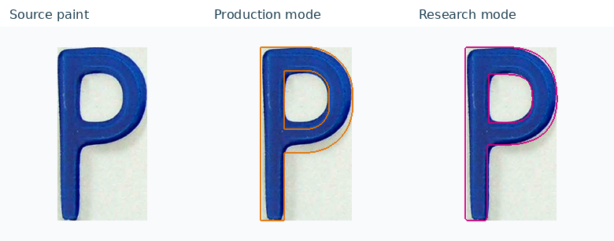
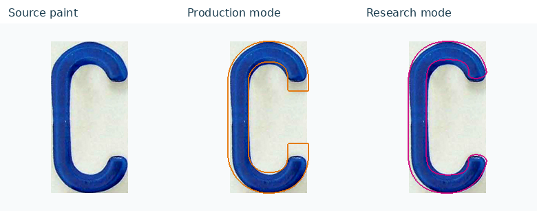
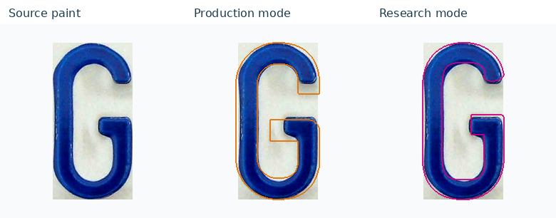
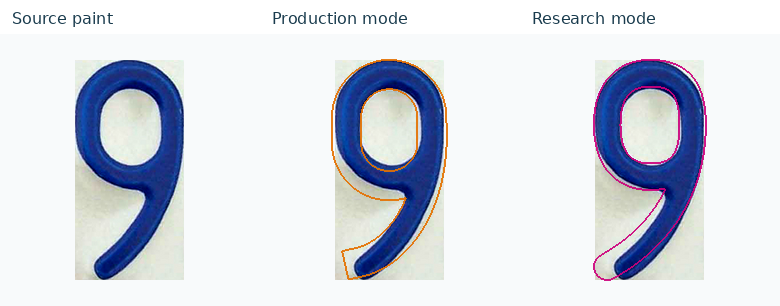
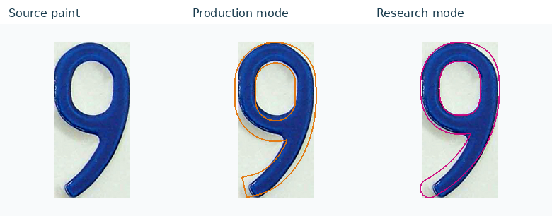
The render has smaller paint height and shifts the left block inward relative to the photographed letters. The numeral positions and terminal shapes both contribute to the remaining mismatch.
Reference crop
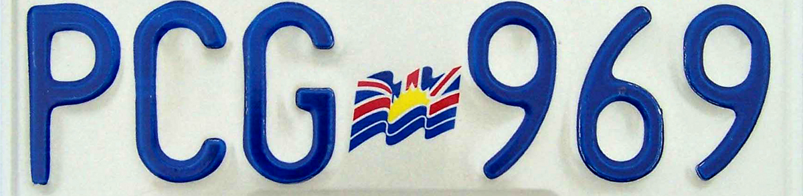
Current research geometry in magenta over the reference
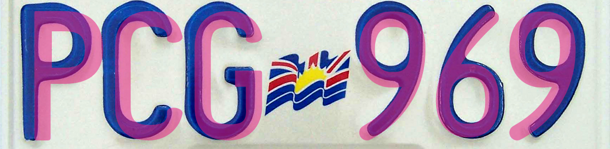
Current production geometry in magenta over the reference
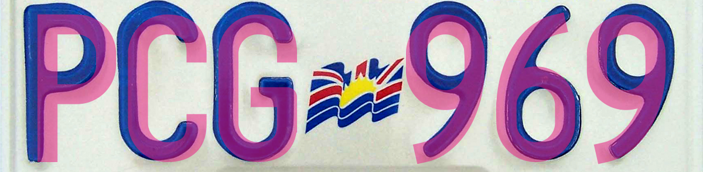
Next: Review 6/9 terminals on independent specimens; separate neoprene paint spread from intended construction and assess the two block positions as a layout issue.
Original SHA-256: 46eaa6b2c5d2e433e4a67911ea101e267f37385b65ca38847996657857f3147c
Recorded decision: Recreated the passenger N inner joins; retained J/B/3/0 with residuals recorded. No complete-alphabet approval.
Shape: The source N has rounded inner diagonal joins. A clean filled reconstruction replaces the sharp notches while preserving family proportions and advances. J and B are close at this scale; the 3 waist/terminals remain visibly different. Both zeros remain separate observations.
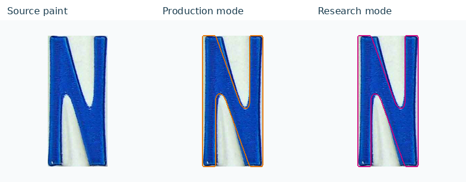
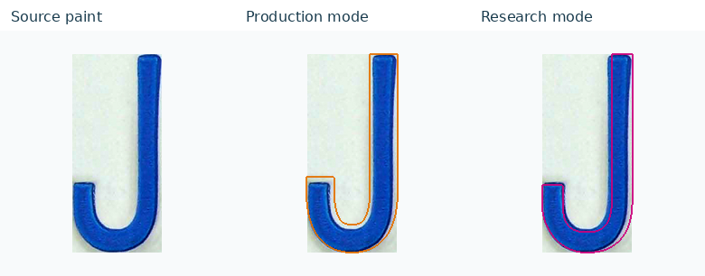
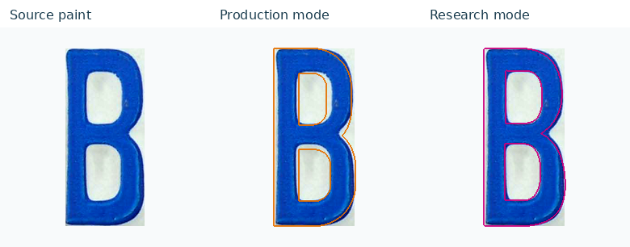
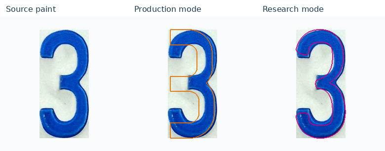
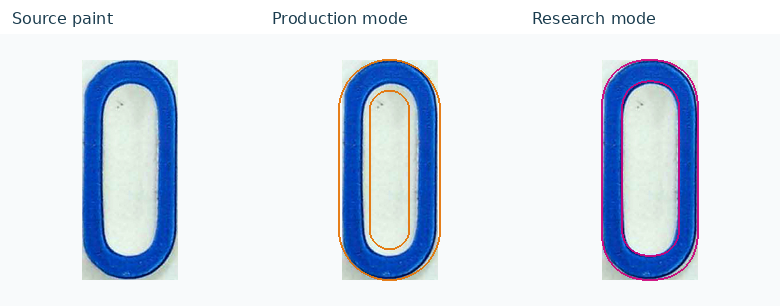
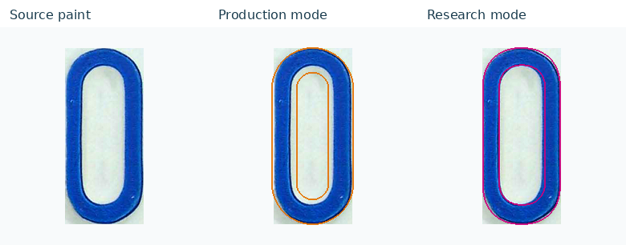
The left block is shifted inward and the numeral group is compressed toward the flag. The N reconstruction changes its inner shape, not the observed block-placement mismatch.
Reference crop
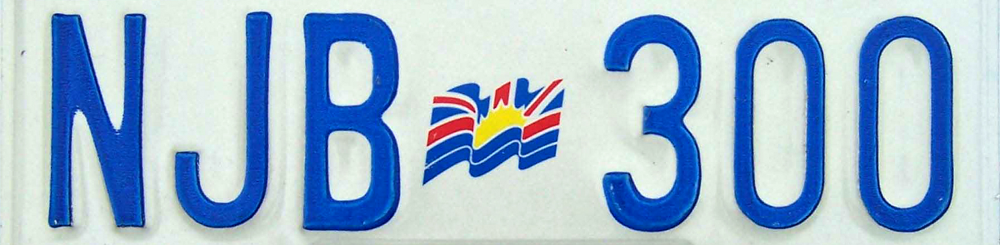
Current research geometry in magenta over the reference
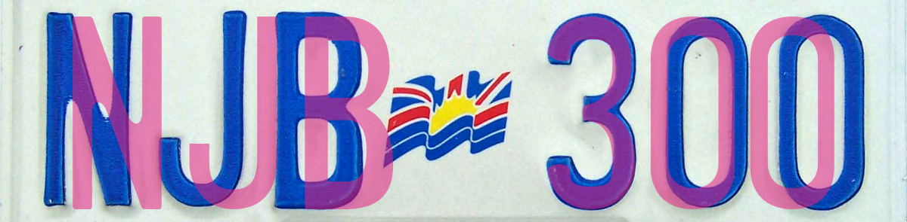
Current production geometry in magenta over the reference
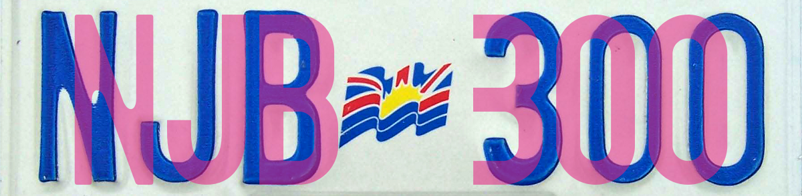
Next: Use the N before/after study, then obtain a second N specimen and compare the 3 waist and the two block spacings independently.
Original SHA-256: 7f76a7341e0956eaf4056d1c09b533affec303bf3e7b3f574c6b5c9a85a04faa
Recorded decision: Recreated the passenger Classic N inner joins using both N occurrences; retained the other masters with residuals recorded.
Shape: Both Ns repeat smoothly rounded inner joins instead of the previous sharp notches. The new filled N preserves the Classic outer width. P and both zeros are close in the common-height comparison; the 3 waist and terminals still differ from the paint.
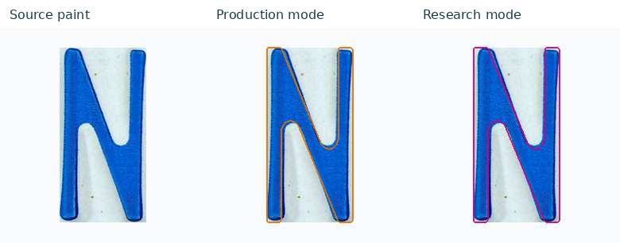
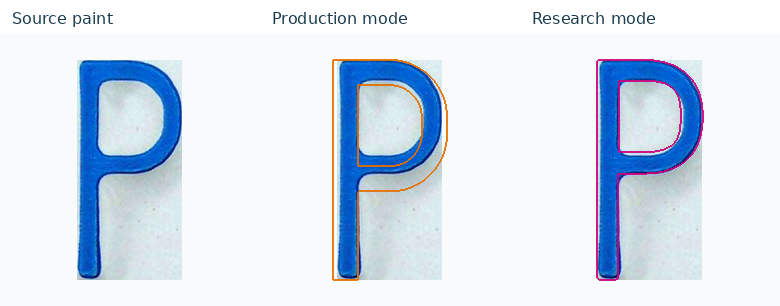
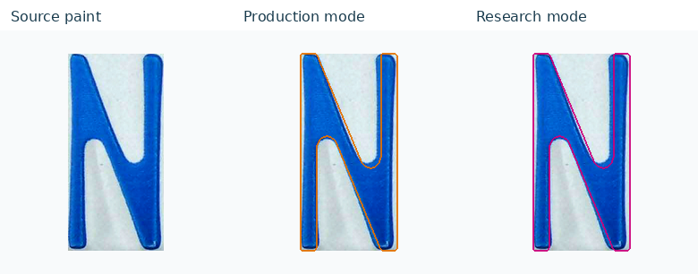
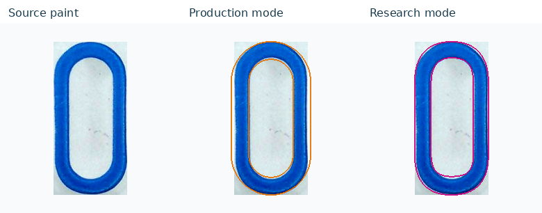
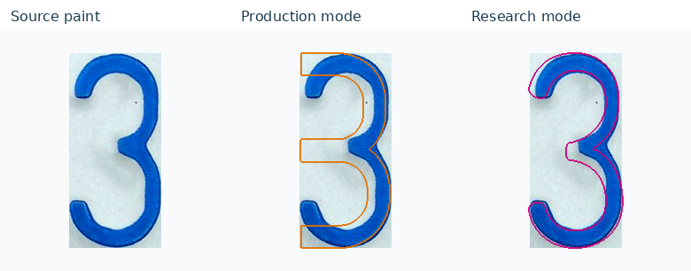
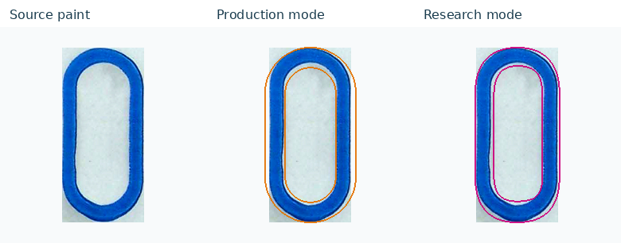
The left block is closer to this specimen than the type-1/type-3 layouts, but residual digit offsets and a smaller cap height remain. Per-character centering is used only in shape panels, never in this placement overlay.
Reference crop
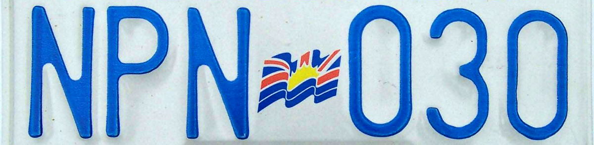
Current research geometry in magenta over the reference
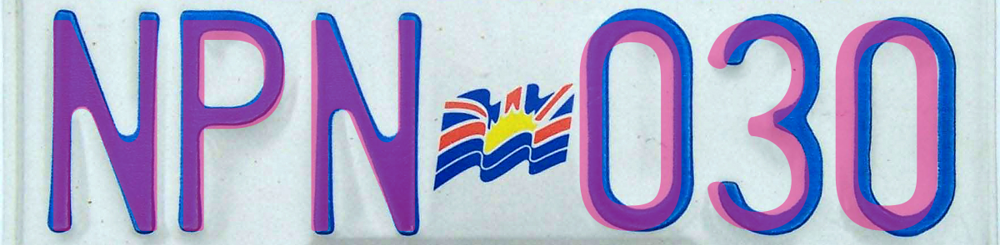
Current production geometry in magenta over the reference
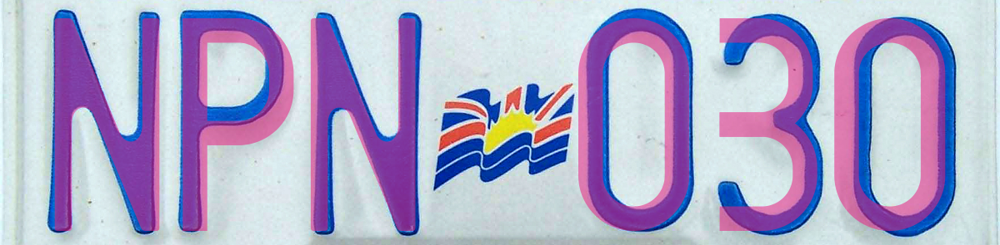
Next: Confirm the N on an independent plate, then compare the 3 and serial cap height without fitting individual widths.
Original SHA-256: e2efd384224edb93a3d9e241ce6c156d83422921e990e71b2796f38156e9b2a6
Recorded decision: Compared six occurrences in the trial context; retained the existing masters with residuals recorded.
Shape: The two Ts give useful repeated controls. The research 2 and 3 improve the broad construction over production, while the K inner joins and 6 terminal remain sharper than the photographed paint. This is a trial specimen, not evidence for every modern Waldale plate.
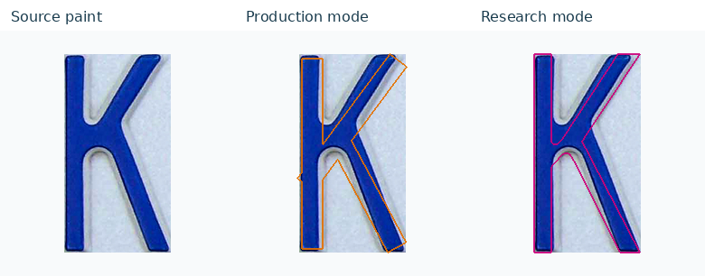
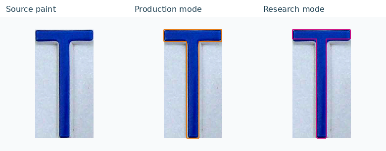
The current left block is slightly inward and the right block is compressed toward the flag; numeral height and paint-width differences also remain.
Reference crop
Current research geometry in magenta over the reference
Current production geometry in magenta over the reference
Next: Review K joins and 6 on another trial-range plate and measure block spacing before applying a common trial layout.
Original SHA-256: 67958d3717ac9055a4d922baf478d43176258d94aeb3f558f7f5df0130b48578
Recorded decision: Compared six occurrences; retained these existing masters. The separately photographed 2025 U/Y/Z are recreated in their own study.
Shape: The research D and W preserve the photographed rounded-rectangle bowl and curved joins more closely than production. The asymmetric 8 waist remains visible. K inner rounding and the 6 terminal remain residual questions rather than silently traced paint details.
This modern example is closer in block placement, with residual cap-height and character offsets still visible. The full-plate mapping is shared across the serial; no independent glyph-position adjustment is made.
Reference crop
Current research geometry in magenta over the reference
Current production geometry in magenta over the reference
Next: Use the U/Y/Z before/after study, then verify K/6 construction and the modern serial cap height on additional straight-on sources.
Original SHA-256: 049548d675a468b626a96afa10ef62d66ece9e2387446bd38d046350907069dd
The six-family ledger still identifies A-counter, 3-waist, 6/9-terminal, K-join, cap-height and block-spacing questions. The five reconstructed masters do not complete these alphabets. Independent specimens are the next useful check for N and U/Y/Z.
Motorcycle and other small-plate contexts need separate comparisons, including cases outside the Motorcycle use category. The recovered 1930 note now correctly distinguishes a missing original tracing input from an existing observed-8 research candidate whose original source still needs to be recovered.
| Profile | Physical contexts | Cases | Next review action |
|---|---|---|---|
| ACME (1978, Quebec-style)bc-acme-1978 | large | 6 | Compare the condensed oval digits, flat-topped 3, unbased flagged 1 and closed 4 against 1978 specimens. Review letters separately from numeric comparison charts. |
| ACME (1979 base)bc-acme-1979 | large, motorcycle, other-small | 49 | Keep the 1979 ACME context separate from 1978 and Hi-Signs. Compare narrow proportions, stroke weight and letters on an independent specimen. |
| APEC motorcade · narrow embossed figuresbc-apec-motorcade-serial | independent | 1 | Use ICBC 121 for the observed 1/2 and their placement. Other digits remain constructed. Keep motorcade and federal military alphabets separate. |
| Astrographic · male/female diesbc-astro-1 | large | 5 | Review this explicitly selectable alternative even though it has no default group. Passenger pool has candidate digits 0–9 and letters A/L; other letters need independent evidence. |
| Astrographic · neoprene-top diesbc-astro-2 | large | 5 | Review this explicitly selectable alternative even though it has no default group. Passenger pool has candidate digits 0–9 and C/G/P. Separate intended shape from heavier neoprene paint impressions. |
| Astrographic · non-passenger diesbc-astro-3 | independent, large, motorcycle, other-small | 58 | Compare passenger and non-passenger contexts independently. Passenger pool has candidate digits 0–9 and B/J/N; smaller motorcycle/compact contexts require their own source checks. |
| Astrographic · Classic diesbc-astro-4 | independent, large, motorcycle, other-small | 57 | Compare Classic passenger candidates separately from collector, motorcycle and other contexts. Passenger pool includes digits 0–9 and ABCEFKMNPSVX; a family label does not validate unobserved letters. |
| 1918–23 block diesbc-block-1918 | large, other-small | 9 | Reconstruct/compare the block numeral family from the original 1918–23 plates; verify based 1, width and stroke proportions. Keep non-passenger size contexts separate. |
| Commercial 1952 · rounded serial reconstructionbc-commercial-1952-serial | large | 2 | Revisit the existing C29·419 overlay, including both 9 occurrences. Keep the reconstructed C, separator and pair spacing distinct from the shared-era numeral assessment. |
| Early rounded dies (1940–54)bc-early-1940 | independent, large, motorcycle, other-small | 42 | Verify the rounded master on independent specimens and inspect mixed research units per run. Separate numeric/ABF evidence from constructed prefixes, legends and renewal pieces. |
| Hi-Signs (“Nova Scotia” dies)bc-hisigns-1982 | large, motorcycle, other-small | 26 | Compare wider, lighter figures, round-topped 3 and curved 7 against ACME controls; retain uncertain class-specific transition assignments. |
| Legend · condensed sansbc-legend-condensed | other-small | 1 | This legend-oriented profile appears in a serial context. Check the actual role and source specimen before treating it as an issued serial alphabet. |
| Waldale “Mississippi” diesbc-mississippi | large | 3 | Use Memorial Cross MC000R/MC1000/MC127R for straight-sided bowls, based 1 and near-straight 7. The category attribution does not verify a complete alphabet. |
| Oakalla block dies (1955–69)bc-oakalla-1955 | independent, large, motorcycle, other-small | 76 | Review the 1955–69 rounded-rectangle numerals, open-top 4 and separator, with motorcycle/small contexts and each province/date component kept separate. |
| Oakalla dies (1970–72)bc-oakalla-1970 | independent, large, other-small | 24 | Compare the 1970–72 digit and letter constructions on actual serials. Check spacing and square separator independently of glyph shape. |
| Oakalla dies (1973–77)bc-oakalla-1973 | large, motorcycle, other-small | 45 | Keep the 1973–77 family separate and inspect its open-top 4. Check motorcycle 1974 mixed-die evidence and class-specific legends separately. |
| P.C.M.R. · Company 71 painted letteringbc-pcmr-71 | independent | 1 | Review P/C/M/R and punctuation only against the Company 71 wooden specimen. These hand-painted constructions do not establish other companies or a manufactured alphabet. |
| Prince George bicycle · square centre numeralsbc-pg-bicycle-centre | independent | 3 | Use the photographed Prince George bicycle tag for centre numerals. Keep outer legend geometry and the separate Prince George vehicle issues independent. |
| 1913 porcelain numeralsbc-porcelain-1913 | large, other-small | 3 | Recreate the very condensed 1913 numeral proportions from clean porcelain specimens, checking the intended white paint bodies rather than chips or wear. |
| 1914 porcelain numeralsbc-porcelain-1914 | independent, large | 3 | Keep the heavier 1914 porcelain family separate; verify the flat-topped 5 and the observed digits before extending the alphabet. |
| Astrographic · 1987 Royal motorcade reconstructionbc-royal-1987 | independent | 1 | Use the existing ROYAL 1/18 overlays for repeated R/O/Y/A/L/1 and the single observed 8. Other digits remain coherent constructions for the supported model range. |
| 1928–30, 1933–35 straight diesbc-straight-1928 | large, other-small | 14 | Check upright 1928–29/1933–35 passenger contexts and class-specific exceptions separately; retain the long leading bar as layout evidence. |
| 1924–27, 1931 slanted diesbc-tacey-1924 | large | 11 | Check slanted 1924–27 and 1931–32 specimens with uniform scaling. Review source slant separately from production-fallback transforms. |
| 1936–39 slanted diesbc-tacey-1936 | large, other-small | 12 | Prioritize an independent check of 7, whose documented average has only three source photographs. Retain the whole glyph width during height-normalized overlays. |
| 1930 one-year dies (Thompson)bc-thompson-1930 | large | 2 | The research registry already contains an observed-8 candidate titled 1930 serial 8 from 48·244. Recover its original photograph/archive before refitting it; the legacy production fallback is synthesized from 3 and its mirror. |
| 1915–16 tin numerals (MacDonald)bc-tin-macdonald | large | 2 | Keep early-1916 MacDonald specimens separate from the later overrun. Compare very condensed lithographed numerals without reproducing paper/paint damage. |
| 1916 over-run and 1917 tin numerals (Tacey)bc-tin-tacey | large | 4 | Use late-1916 and 1917 Tacey specimens for the wider numeral construction, with a separate comparison from MacDonald. |
| Early trailer · separate T/TR stampbc-trailer-early-prefix | other-small | 3 | Review the reduced T/TR stamps independently from serials and the large BC abbreviation across the eight listed trailer specimens. |
| Early trailer · narrow upright numeralsbc-trailer-early-serial | other-small | 4 | Compare the narrow upright trailer numerals across the eight listed sources; shared visible construction is a comparison basis, not confirmed common tooling. |
| Waldalebc-waldale | large, motorcycle, other-small | 76 | Separate the 1985-base trial, modern passenger, motorcycle and other-small contexts. Review current U/Y/Z recreations and actual per-character sources; do not apply the passenger candidate pool to every Waldale case. |
| Canada APEC · bold military figuresca-apec-military-serial | independent | 2 | Use enlarged 149 for observed 1/4/9 and smaller 180/134 as qualified controls. Review native-font candidate digits separately from source-guided constructions; keep jurisdiction CA. |
| Prince George 1959 · rounded serif date and serialmunicipal-prince-george-digits | independent | 2 | Review observed 1/5/9 against the 1959 vehicle specimen and keep remaining generated digits labelled as constructions. Separate 1962 lettering and bicycle tags. |
| Municipal · small-plate numeralsmunicipal-serial | independent | 60 | This is a category proxy across many local issues. Select a municipality and specimen before creating reusable geometry; do not approve all municipal alphabets together. |
| Vancouver centennial base · embossed serialmunicipal-vancouver-embossed | independent | 3 | Use Vancouver taxi 1071 for serifed 1, rounded rectangular 0 and curved 7. Keep these embossed numerals independent of screened Frankfurter wording. |
The profile count includes a reduced prefix within a serial container. It is a rendering-context count, not a claim of 34 historically independent alphabets.


.jpg){kind=link}
.jpg){kind=link}
.jpg){kind=link}
.jpg){kind=link}
.jpg){kind=link}
.jpg){kind=link}